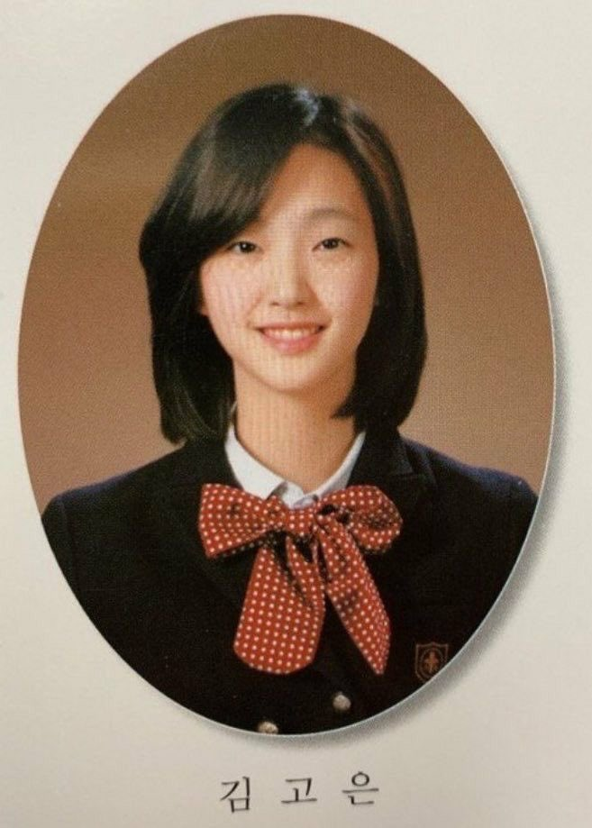

일반인 김고은만큼 이쁜사람 많이없다 착각하는게 일반인중에 이쁘다고 하는애 히든싱어 방청되서 맨앞자리 앉은거 카메라 잡혔는데 오징어 그잡체임.. 실제로 보는거랑 카메라 찍힌거랑 달라 부하게 나옴
김고은 한예종에서 여신이였다 별명
조정린도 실제로보면 얼굴 겁나작음 충격먹었다
5명이서 모여서 누가 걔 좋아하냐고 하는데 그중에서 3명은 좋아할 얼굴
과연 3명뿐일까
얘가 승모근 큰 bj 보다 훨씬 이쁜데
걔는 엄청 올려치면서 김고은은 엄청 내려치네
ㅋㅋㅋ개드립은 뭔가 인싸픽에 반감 많이 갖는거 같음
그건 니생각이고 ㅇㅇ
ㄹㅇㅋㅋ
고은류 의 진조(眞祖)
남자들이 7이라고 착각하는 9의 여자
과 동기랑 친군데 변요한이랑 김고은이 유명하긴 했다고 들음. 근데 여자들은 과에 예쁘다 유명한 사람이 워낙 많았어서 원탑까진 아니었다더라
김고은 행사같은데 가면 왠만한 배우들하고도 안 꿇리던데 키도 크고 실제로 보면 그냥 여신 소리 나올거같더라
얼굴 쬐마나고 팔다리 길쭉하고 그래서 ㄹㅇ 실물깡패란 얘기가 있지
마동석도 실물깡패더라
이목구비가 화려하지 않아서 내려치는 사람들이 많은데
실물 보면 비율이랑 아우라때매 다들 어버버 하지 않을까 싶음
얼굴이 좀 넓어진 느낌이 있는데 은교때 생각하면 존나 이쁜거 맞음
정석 미인은 아니어도 이목구비랑 피부가 깨끗하다는 느낌이 들면 자꾸 눈이 감
모자이크좀
저 학번에 김고은 안은진 박소담 이유영 있네
엄..
나 김고은 좋음 고아
아무리 봐도 이수지 급인데
이수지 프리미엄버전이지
엄지윤도 실제로 보면 꽤괜찮드라 놀랐음ㅋㅋ
슬기류 최강